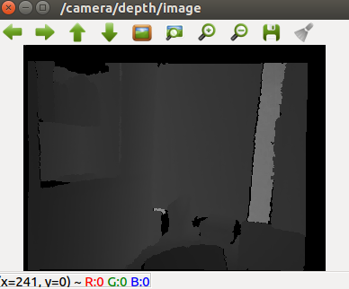
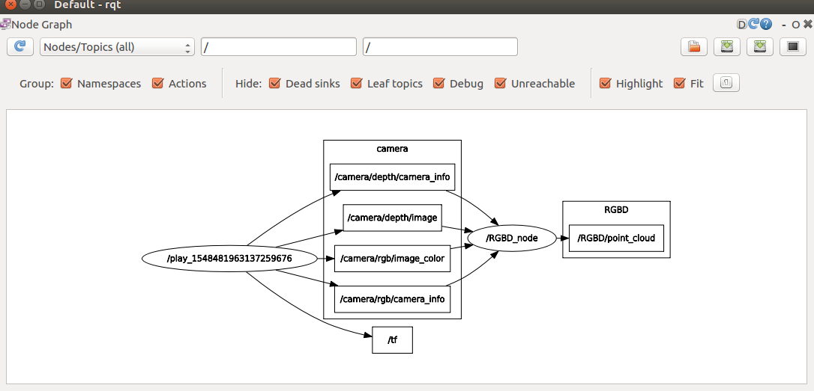
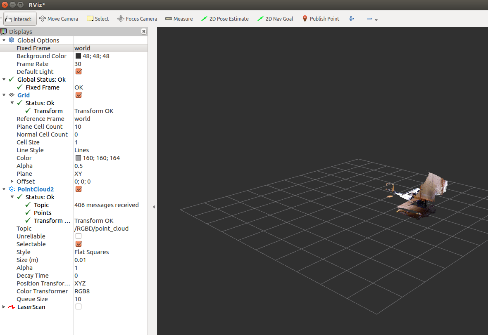

Resources
Note: the source code is backed up in Github with some modification.
Practice
ROS Workspace
How to creat a ROS Workspace, it is more convenient than catkin_workspace
- Create ROS_WORKSPACE
mkdir ~/ROS_WORKSPACE
- Edit
~/.bashrc
vim ~/.bashrc
Then, paste the following behind source /opt/ros/kinetic/setup.bash
export ROS_WORKSPACE=$HOME/ROS_WORKSPACE
export ROS_PACKAGE_PATH=$ROS_WORKSPACE:$ROS_PACKAGE_PATH
Introduction
Overview
Build the project
- cd build
- rm -r *
- cmake ..
- make -j4
Download the data from TUM
Run
- roscore
- rosbag play rgbd_dataset_freiburg1_room.bag
- ./RGBD_demo /camera/rgb/image_color /camera/depth/image /camera/rgb/- -camera_info /camera/depth/camera_info
- rosrun rviz rviz
Compile
courseRepo/1_Introduction$ cd build/
courseRepo/1_Introduction/build$ cmake ..
Got this error:
CMake Error at CMakeLists.txt:31 (find_package):
Could not find a configuration file for package "OpenCV" that is compatible
with requested version "2.4.8".
The following configuration files were considered but not accepted:
/opt/ros/kinetic/share/OpenCV-3.3.1-dev/OpenCVConfig.cmake, version: 3.3.1
Solutions:
Check OpenCV Version:
yubao@yubao-Z370M-S01:~$ opencv_version
3.3.1-dev
Therefore, replace OpenCV version to 3.3.1
find_package(OpenCV 3.3 REQUIRED)
Then got this error:
-- Found OpenCV: /opt/ros/kinetic (found suitable version "3.3.1", minimum required is "3.3")
CMake Error at CMakeLists.txt:32 (find_package):
Could not find a configuration file for package "Eigen3" that is compatible
with requested version "3.1.0".
The following configuration files were considered but not accepted:
/usr/lib/cmake/eigen3/Eigen3Config.cmake, version: unknown
Solution:
find_package(Eigen3 REQUIRED)
Then:
courseRepo/1_Introduction/build$ make -j4
Run
- Run
roscorePARAMETERS * /rosdistro: kinetic * /rosversion: 1.12.14 rosbag play rgbd_dataset_freiburg1_room.bagrostopic list
yubao@yubao-Z370M-S01:~$ rostopic list
/camera/depth/camera_info
/camera/depth/image
/camera/rgb/camera_info
/camera/rgb/image_color
/clock
/cortex_marker_array
/imu
/rosout
/rosout_agg
/tf
- rostopic info
yubao@yubao-Z370M-S01:~$ rostopic info /camera/depth/image
Type: sensor_msgs/Image
Publishers:
* /play_1548468788024808162 (http://yubao-Z370M-S01:39651/)
Subscribers: None
- rosrun image_view
```sh
rosrun image_view image_view image:=/camera/depth/image
{#fig:}
rostopic hz
rostopic hz /camera/depth/image
Result:
average rate: 30.003
min: 0.000s max: 0.109s std dev: 0.01654s window: 1010
average rate: 30.006
min: 0.000s max: 0.109s std dev: 0.01663s window: 1040
average rate: 29.995
min: 0.000s max: 0.109s std dev: 0.01685s window: 1070
average rate: 29.999
rostopic echorostopic echo /camera/depth/image/header
Result:
seq: 5638
stamp:
secs: 1305031956
nsecs: 119492736
frame_id: "/openni_rgb_optical_frame"
- Follow these steps
yubao@yubao-Z370M-S01:~/ROS_WORKSPACE/courseRepo/1_Introduction$ cat run.sh
#roscore
#rosbad play rrgbd_dataset_freiburg1_room.bag
./RGBD_demo /camera/rgb/image_color /camera/depth/image /camera/rgb/camera_info /camera/depth/camera_info
# rosrun rviz rviz
{#fig:}
{#fig:}